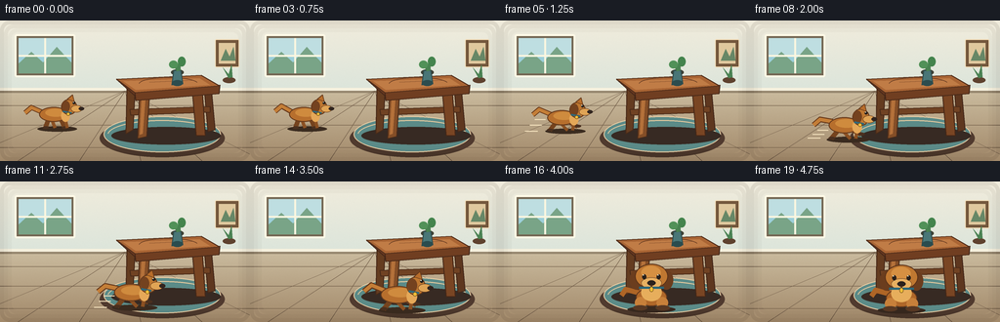
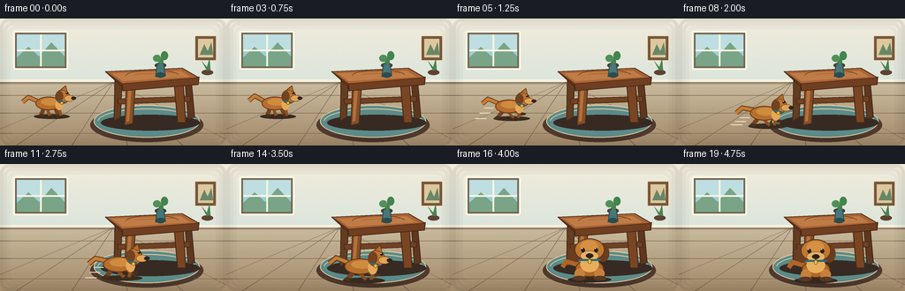
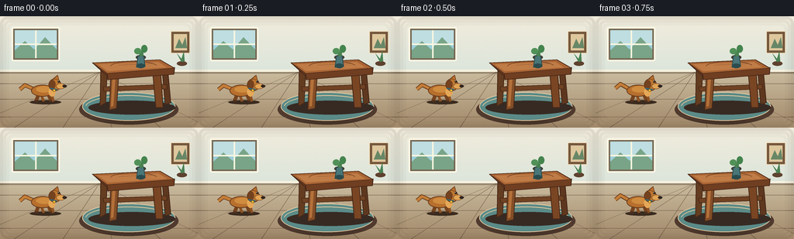

CODING AGENTS AS PIXEL WORLD MODELS
traex/GPT-5.6-Sol · dynamic_spatial_relationship_0000
点击播放 · 原生 RGB 像素
逐轮保存的候选
回放视频、检查图与代码变化。
每份候选均可单独播放。实际图片检查记录在下方工具轨迹中。
候选 01播放与检查图
点击播放 · 原生 RGB 像素

展开代码变化
--- 上一保存版本
+++ 本次保存版本
@@ -0,0 +1,216 @@
+from pathlib import Path
+import math
+import numpy as np
+from PIL import Image, ImageDraw
+import artifact_io
+
+# Deterministic hand-rendered animation. All geometry is generated from prompt text.
+W, H, N, SS = 256, 144, 20, 4
+rng = np.random.default_rng(7)
+
+class Painter:
+ def __init__(self, im):
+ self.im = im
+ self.d = ImageDraw.Draw(im, 'RGBA')
+ def b(self, box): return tuple(int(round(v*SS)) for v in box)
+ def pts(self, points): return [(int(round(x*SS)), int(round(y*SS))) for x,y in points]
+ def ellipse(self, box, fill, outline=None, width=1):
+ self.d.ellipse(self.b(box), fill=fill, outline=outline, width=max(1,int(width*SS)))
+ def rect(self, box, fill, outline=None, width=1):
+ self.d.rectangle(self.b(box), fill=fill, outline=outline, width=max(1,int(width*SS)))
+ def rr(self, box, radius, fill, outline=None, width=1):
+ self.d.rounded_rectangle(self.b(box), radius=int(radius*SS), fill=fill, outline=outline, width=max(1,int(width*SS)))
+ def poly(self, points, fill, outline=None, width=1):
+ q=self.pts(points); self.d.polygon(q, fill=fill)
+ if outline: self.d.line(q+[q[0]], fill=outline, width=max(1,int(width*SS)), joint='curve')
+ def line(self, points, fill, width=1):
+ self.d.line(self.pts(points), fill=fill, width=max(1,int(width*SS)), joint='curve')
+ def arc(self, box, start, end, fill, width=1):
+ self.d.arc(self.b(box), start, end, fill=fill, width=max(1,int(width*SS)))
+
+
+def make_background(frame):
+ # Soft warm daylight gradient with subtle stable paper grain.
+ yy, xx = np.mgrid[0:H*SS, 0:W*SS]
+ wall = np.zeros((H*SS,W*SS,3), dtype=np.float32)
+ floorline = 72*SS
+ top=np.array([241,236,220]); bot=np.array([220,229,219])
+ t=np.minimum(yy/floorline,1)[...,None]
+ wall[:] = top*(1-t)+bot*t
+ floor_top=np.array([202,187,158]); floor_bot=np.array([162,137,106])
+ tf=np.clip((yy-floorline)/(H*SS-floorline),0,1)[...,None]
+ floor=floor_top*(1-tf)+floor_bot*tf
+ wall=np.where((yy>=floorline)[...,None],floor,wall)
+ grain = rng.normal(0, 1.2, (H*SS,W*SS,1))
+ arr=np.uint8(np.clip(wall+grain,0,255))
+ return Image.fromarray(arr,'RGB').convert('RGBA')
+
+
+def draw_room(p):
+ # Baseboard, floor perspective and tasteful wall furnishings establish depth.
+ p.rect((0,69,256,73), (246,241,222,255))
+ p.rect((0,72,256,74), (150,135,111,110))
+ for x in [-45,18,81,144,207,270]:
+ p.line(((128,72),(x,144)), (116,96,75,38), .6)
+ for y in [87,107,130]:
+ p.line(((0,y),(256,y)), (111,91,70,27), .6)
+ # Window at left, intentionally above the dog and subdued.
+ p.rr((15,14,77,58), 2, (116,104,84,180), (255,250,231,220), 2)
+ p.rect((19,18,73,54), (156,207,218,255))
+ p.rect((19,18,73,35), (190,222,225,255))
+ p.poly(((19,44),(32,32),(44,43),(58,27),(73,43),(73,54),(19,54)), (121,164,135,255))
+ p.line(((46,18),(46,54)), (250,246,224,240), 2)
+ p.line(((19,36),(73,36)), (250,246,224,240), 2)
+ # Framed picture and small plant on right.
+ p.rr((220,19,245,48), 1.5, (116,87,60,255), (244,224,188,255), 1)
+ p.rect((224,23,241,44), (223,199,157,255))
+ p.poly(((226,41),(231,29),(235,37),(239,27),(241,41)), (103,135,102,255))
+ p.ellipse((228,58,241,64),(94,66,47,255))
+ p.poly(((234,59),(228,48),(234,55),(237,45),(238,58)),(74,130,83,255))
+ # Rug visually defines the table's front zone.
+ p.ellipse((102,101,230,140), (80,58,46,42))
+ p.ellipse((106,98,226,135), (91,139,136,215), (231,204,163,180), 1)
+ p.arc((110,102,222,132), 185, 350, (229,201,157,130), 1)
+
+
+def draw_table(p):
+ # Contact shadow.
+ p.ellipse((114,109,226,127),(55,42,35,50))
+ # Rear legs first.
+ p.poly(((130,70),(138,71),(136,112),(129,116)), (100,60,32,255),(72,42,25,255),1)
+ p.poly(((209,68),(216,68),(220,112),(213,114)), (94,55,31,255),(68,39,24,255),1)
+ # Cross bar makes the object unambiguously a table.
+ p.poly(((133,91),(215,88),(215,94),(134,97)),(112,66,35,255),(72,42,24,220),1)
+ # Front legs catch warm light.
+ p.poly(((143,74),(153,74),(150,119),(141,121)), (132,78,39,255),(73,43,25,255),1)
+ p.poly(((197,73),(207,72),(210,118),(201,118)), (121,69,35,255),(70,40,23,255),1)
+ p.poly(((145,77),(149,77),(146,116),(143,117)), (180,113,58,130))
+ # Thick perspective tabletop with rounded-looking corners.
+ p.poly(((119,60),(207,57),(225,70),(138,77)), (105,57,31,255),(68,38,25,255),1)
+ p.poly(((138,72),(225,66),(224,75),(139,82)), (112,62,33,255),(68,38,23,255),1)
+ p.poly(((119,60),(206,56),(225,67),(138,74)), (170,101,52,255),(83,47,27,255),1)
+ p.poly(((126,62),(204,59),(215,66),(139,71)), (192,124,70,170))
+ # Wood grain and a small vase.
+ p.arc((142,58,203,72), 185, 345, (104,60,34,170), .8)
+ p.line(((153,63),(197,61)),(111,65,37,130),.7)
+ p.ellipse((175,50,188,56),(63,65,53,80))
+ p.poly(((178,51),(185,51),(187,65),(176,66)),(73,118,119,255),(46,76,78,255),1)
+ p.ellipse((176,61,187,67),(43,76,78,255))
+ p.poly(((181,52),(176,43),(181,48),(184,39),(185,51)),(73,130,81,255))
+ p.ellipse((173,41,182,49),(81,145,88,255))
+ p.ellipse((182,37,190,47),(68,132,77,255))
+
+
+def tr(x,y,cx,cy,s): return (cx+x*s, cy+y*s)
+def boxtr(a,cx,cy,s): return tuple([cx+a[0]*s,cy+a[1]*s,cx+a[2]*s,cy+a[3]*s])
+
+
+def draw_dog_side(p,cx,ground,s,phase,run_amount):
+ # Golden retriever-like side silhouette, facing right.
+ # Shadow, strongest on ground and stretched during run.
+ p.ellipse(boxtr((-22,-3,23,3),cx,ground,s),(58,43,31,85))
+ # Tail behind body, with a lively wag.
+ wag=math.sin(phase)*4*run_amount + math.sin(phase*.35)*2
+ tail=[tr(-16,-19,cx,ground,s),tr(-29,-26-wag,cx,ground,s),tr(-36,-20-wag,cx,ground,s)]
+ p.line(tail,(105,58,27,255),6*s)
+ p.line(tail,(196,126,55,255),4*s)
+ # Running legs switch extension; paws are distinct dark silhouettes.
+ stride=math.sin(phase)*9*run_amount
+ lift=max(0,math.sin(phase))*5*run_amount
+ legs=[(-10,-10,-13+stride*.55,-1-lift),(5,-10,9-stride*.65,-1-max(0,-math.sin(phase))*5*run_amount)]
+ for x0,y0,x1,y1 in legs:
+ p.line((tr(x0,y0,cx,ground,s),tr(x1,y1,cx,ground,s)),(117,67,30,255),5*s)
+ p.ellipse(boxtr((x1-3,y1-2,x1+4,y1+1),cx,ground,s),(74,48,31,255))
+ # Far legs, offset in phase.
+ stride2=-stride
+ for x0,y0,x1,y1 in [(-5,-9,-2+stride2*.6,-1),(10,-10,12-stride2*.45,-1)]:
+ p.line((tr(x0,y0,cx,ground,s),tr(x1,y1,cx,ground,s)),(139,80,34,255),3.7*s)
+ # Body and cream chest patch.
+ bob=abs(math.sin(phase))*1.5*run_amount
+ p.ellipse(boxtr((-20,-25+bob,13,-8+bob),cx,ground,s),(183,111,45,255),(102,58,28,255),1)
+ p.ellipse(boxtr((-13,-23+bob,11,-14+bob),cx,ground,s),(207,139,62,180))
+ p.ellipse(boxtr((5,-22+bob,15,-8+bob),cx,ground,s),(229,168,88,230))
+ # Neck, head, muzzle.
+ p.ellipse(boxtr((5,-34+bob,23,-16+bob),cx,ground,s),(190,119,48,255),(99,56,27,255),1)
+ # floppy ear
+ p.ellipse(boxtr((6,-32+bob,15,-19+bob),cx,ground,s),(116,66,31,255))
+ p.poly([tr(12,-34+bob,cx,ground,s),tr(18,-39+bob,cx,ground,s),tr(20,-31+bob,cx,ground,s)],(183,109,43,255),(100,57,27,255),.8)
+ p.ellipse(boxtr((16,-27+bob,29,-19+bob),cx,ground,s),(224,164,85,255),(99,56,27,255),.7)
+ p.ellipse(boxtr((25,-25+bob,31,-21+bob),cx,ground,s),(49,37,31,255))
+ p.ellipse(boxtr((18,-31+bob,21,-28+bob),cx,ground,s),(35,30,27,255))
+ p.ellipse(boxtr((18.5,-30.8+bob,19.4,-29.9+bob),cx,ground,s),(255,249,222,255))
+ # Collar and tag reinforce domesticated dog identity.
+ p.line((tr(7,-20+bob,cx,ground,s),tr(17,-18+bob,cx,ground,s)),(45,105,124,255),2.2*s)
+ p.ellipse(boxtr((11,-19+bob,15,-15+bob),cx,ground,s),(238,190,58,255),(103,70,25,255),.5)
+
+
+def draw_dog_front(p,cx,ground,s,frame):
+ # End pose faces the viewer: decisively in front of and occluding the table.
+ wag=math.sin(frame*1.7)*3
+ p.ellipse(boxtr((-23,-3,23,3),cx,ground,s),(55,40,30,90))
+ # tail peeks out behind body
+ p.line((tr(-12,-16,cx,ground,s),tr(-25,-22+wag,cx,ground,s),tr(-29,-16+wag,cx,ground,s)),(174,101,38,255),5*s)
+ # seated/front legs
+ p.ellipse(boxtr((-15,-21,15,-3),cx,ground,s),(175,103,41,255),(96,54,27,255),1)
+ p.ellipse(boxtr((-16,-12,-5,-1),cx,ground,s),(199,128,58,255))
+ p.ellipse(boxtr((5,-12,16,-1),cx,ground,s),(199,128,58,255))
+ p.ellipse(boxtr((-18,-4,-4,1),cx,ground,s),(87,56,35,255))
+ p.ellipse(boxtr((4,-4,18,1),cx,ground,s),(87,56,35,255))
+ # chest ruff
+ p.ellipse(boxtr((-10,-25,10,-8),cx,ground,s),(231,174,92,255))
+ # ears behind head
+ p.ellipse(boxtr((-21,-38,-8,-19),cx,ground,s),(107,61,30,255))
+ p.ellipse(boxtr((8,-38,21,-19),cx,ground,s),(107,61,30,255))
+ p.ellipse(boxtr((-16,-44,16,-20),cx,ground,s),(192,120,49,255),(92,52,26,255),1)
+ # forehead highlight and muzzle
+ p.ellipse(boxtr((-10,-42,9,-29),cx,ground,s),(214,144,66,180))
+ p.ellipse(boxtr((-10,-31,10,-20),cx,ground,s),(232,176,98,255),(112,70,36,180),.6)
+ # eyes, brows, nose, smile
+ for ex in (-7,7):
+ p.ellipse(boxtr((ex-2,-34,ex+2,-29),cx,ground,s),(39,31,25,255))
+ p.ellipse(boxtr((ex-1.2,-33.8,ex-.2,-32.8),cx,ground,s),(255,247,220,255))
+ p.ellipse(boxtr((-4,-28,4,-23),cx,ground,s),(43,33,28,255))
+ p.arc(boxtr((-7,-27,0,-20),cx,ground,s),350,100,(69,39,29,255),.8*s)
+ p.arc(boxtr((0,-27,7,-20),cx,ground,s),80,190,(69,39,29,255),.8*s)
+ p.line((tr(-12,-21,cx,ground,s),tr(12,-21,cx,ground,s)),(42,103,122,255),2.3*s)
+ p.ellipse(boxtr((-2,-22,2,-17),cx,ground,s),(241,191,56,255),(108,72,22,255),.5)
+
+
+def smoothstep(t):
+ t=max(0,min(1,t)); return t*t*(3-2*t)
+
+frames=[]
+for i in range(N):
+ im=make_background(i); p=Painter(im)
+ draw_room(p); draw_table(p)
+ # Hold clearly at left for a full second, then run on a curved path toward foreground.
+ u=smoothstep((i-3)/11)
+ cx=58 + 97*u
+ ground=111 + 21*u + 2.0*math.sin(math.pi*u)
+ s=.90 + .16*u
+ running = min(1,max(0,(i-3)/2)) * min(1,max(0,(16-i)/2))
+ phase=(i-3)*2.1
+ # Subtle transient speed streaks/dust, kept behind the dog.
+ if 5 <= i <= 13:
+ alpha=int(65*running)
+ for k in range(3):
+ yy=ground-11+k*5+math.sin(i+k)*1.2
+ p.line(((cx-31-k*5,yy),(cx-20-k*4,yy)),(243,225,189,alpha),1.1)
+ if i in (7,10,13):
+ p.ellipse((cx-22,ground-3,cx-13,ground+3),(235,216,180,80))
+ if i < 15:
+ draw_dog_side(p,cx,ground,s,phase,running)
+ else:
+ # A tiny settling bounce keeps the final pose alive.
+ settle = (2.0 if i==15 else (-1.0 if i==16 else 0.0))
+ draw_dog_front(p,155,132+settle,1.06,i)
+ # Gentle vignette for cinematic focus.
+ ov=Image.new('RGBA',im.size,(0,0,0,0)); od=ImageDraw.Draw(ov)
+ for q,a in [(0,24),(4,15),(8,8)]:
+ od.rounded_rectangle((q*SS,q*SS,(W-q)*SS-1,(H-q)*SS-1),radius=10*SS,outline=(45,31,22,a),width=4*SS)
+ im=Image.alpha_composite(im,ov).convert('RGB').resize((W,H),Image.Resampling.LANCZOS)
+ frames.append(np.asarray(im,dtype=np.uint8))
+
+frames=np.stack(frames)
+assert frames.shape==(20,144,256,3) and frames.dtype==np.uint8
+artifact_io.save(frames, Path(__file__).resolve().parent)
候选 02播放与检查图
点击播放 · 原生 RGB 像素


展开代码变化
--- 上一保存版本
+++ 本次保存版本
@@ -7,6 +7,7 @@
# Deterministic hand-rendered animation. All geometry is generated from prompt text.
W, H, N, SS = 256, 144, 20, 4
rng = np.random.default_rng(7)
+STABLE_GRAIN = rng.normal(0, 1.2, (H*SS, W*SS, 1))
class Painter:
def __init__(self, im):
@@ -41,9 +42,8 @@
tf=np.clip((yy-floorline)/(H*SS-floorline),0,1)[...,None]
floor=floor_top*(1-tf)+floor_bot*tf
wall=np.where((yy>=floorline)[...,None],floor,wall)
- grain = rng.normal(0, 1.2, (H*SS,W*SS,1))
- arr=np.uint8(np.clip(wall+grain,0,255))
- return Image.fromarray(arr,'RGB').convert('RGBA')
+ arr=np.uint8(np.clip(wall+STABLE_GRAIN,0,255))
+ return Image.fromarray(arr).convert('RGBA')
def draw_room(p):
可观测工具轨迹
实际执行的命令与返回图片。
命令 1exit 0
/bin/bash -lc "cat prompt.txt && printf '\\n--- GENERATION_RULES.md ---\\n' && cat GENERATION_RULES.md && printf '\\n--- task_spec.json ---\\n' && cat task_spec.json"
命令 2exit 0
/bin/bash -lc "find . -maxdepth 3 -type f -printf '%p\\n' | sort && printf '\\n--- tools ---\\n' && command -v ffmpeg || true && command -v python3 || true && python3 - <<'PY' mods=['PIL','cv2','numpy','imageio','moviepy','cairo'] for m in mods: try: x=__import__(m); print(m,'OK',getattr(x,'__version__','')) except Exception as e: print(m,'NO',e) PY"
命令 3exit 0
/bin/bash -lc 'cat artifact_io.py'
命令 4exit 0
/bin/bash -lc "cat > generate.py <<'PY'
from pathlib import Path
import math
import numpy as np
from PIL import Image, ImageDraw
import artifact_io
# Deterministic hand-rendered animation. All geometry is generated from prompt text.
W, H, N, SS = 256, 144, 20, 4
rng = np.random.default_rng(7)
class Painter:
def __init__(self, im):
self.im = im
self.d = ImageDraw.Draw(im, 'RGBA')
def b(self, box): return tuple(int(round(v*SS)) for v in box)
def pts(self, points): return [(int(round(x*SS)), int(round(y*SS))) for x,y in points]
def ellipse(self, box, fill, outline=None, width=1):
self.d.ellipse(self.b(box), fill=fill, outline=outline, width=max(1,int(width*SS)))
def rect(self, box, fill, outline=None, width=1):
self.d.rectangle(self.b(box), fill=fill, outline=outline, width=max(1,int(width*SS)))
def rr(self, box, radius, fill, outline=None, width=1):
self.d.rounded_rectangle(self.b(box), radius=int(radius*SS), fill=fill, outline=outline, width=max(1,int(width*SS)))
def poly(self, points, fill, outline=None, width=1):
q=self.pts(points); self.d.polygon(q, fill=fill)
if outline: self.d.line(q+[q[0]], fill=outline, width=max(1,int(width*SS)), joint='curve')
def line(self, points, fill, width=1):
self.d.line(self.pts(points), fill=fill, width=max(1,int(width*SS)), joint='curve')
def arc(self, box, start, end, fill, width=1):
self.d.arc(self.b(box), start, end, fill=fill, width=max(1,int(width*SS)))
def make_background(frame):
# Soft warm daylight gradient with subtle stable paper grain.
yy, xx = np.mgrid[0:H*SS, 0:W*SS]
wall = np.zeros((H*SS,W*SS,3), dtype=np.float32)
floorline = 72*SS
top=np.array([241,236,220]); bot=np.array([220,229,219])
t=np.minimum(yy/floorline,1)[...,None]
wall[:] = top*(1-t)+bot*t
floor_top=np.array([202,187,158]); floor_bot=np.array([162,137,106])
tf=np.clip((yy-floorline)/(H*SS-floorline),0,1)[...,None]
floor=floor_top*(1-tf)+floor_bot*tf
wall=np.where((yy>=floorline)[...,None],floor,wall)
grain = rng.normal(0, 1.2, (H*SS,W*SS,1))
arr=np.uint8(np.clip(wall+grain,0,255))
return Image.fromarray(arr,'RGB').convert('RGBA')
def draw_room(p):
# Baseboard, floor perspective and tasteful wall furnishings establish depth.
p.rect((0,69,256,73), (246,241,222,255))
p.rect((0,72,256,74), (150,135,111,110))
for x in [-45,18,81,144,207,270]:
p.line(((128,72),(x,144)), (116,96,75,38), .6)
for y in [87,107,130]:
p.line(((0,y),(256,y)), (111,91,70,27), .6)
# Window at left, intentionally above the dog and subdued.
p.rr((15,14,77,58), 2, (116,104,84,180), (255,250,231,220), 2)
p.rect((19,18,73,54), (156,207,218,255))
p.rect((19,18,73,35), (190,222,225,255))
p.poly(((19,44),(32,32),(44,43),(58,27),(73,43),(73,54),(19,54)), (121,164,135,255))
p.line(((46,18),(46,54)), (250,246,224,240), 2)
p.line(((19,36),(73,36)), (250,246,224,240), 2)
# Framed picture and small plant on right.
p.rr((220,19,245,48), 1.5, (116,87,60,255), (244,224,188,255), 1)
p.rect((224,23,241,44), (223,199,157,255))
p.poly(((226,41),(231,29),(235,37),(239,27),(241,41)), (103,135,102,255))
p.ellipse((228,58,241,64),(94,66,47,255))
p.poly(((234,59),(228,48),(234,55),(237,45),(238,58)),(74,130,83,255))
# Rug visually defines the table's front zone.
p.ellipse((102,101,230,140), (80,58,46,42))
p.ellipse((106,98,226,135), (91,139,136,215), (231,204,163,180), 1)
p.arc((110,102,222,132), 185, 350, (229,201,157,130), 1)
def draw_table(p):
# Contact shadow.
p.ellipse((114,109,226,127),(55,42,35,50))
# Rear legs first.
p.poly(((130,70),(138,71),(136,112),(129,116)), (100,60,32,255),(72,42,25,255),1)
p.poly(((209,68),(216,68),(220,112),(213,114)), (94,55,31,255),(68,39,24,255),1)
# Cross bar makes the object unambiguously a table.
p.poly(((133,91),(215,88),(215,94),(134,97)),(112,66,35,255),(72,42,24,220),1)
# Front legs catch warm light.
p.poly(((143,74),(153,74),(150,119),(141,121)), (132,78,39,255),(73,43,25,255),1)
p.poly(((197,73),(207,72),(210,118),(201,118)), (121,69,35,255),(70,40,23,255),1)
p.poly(((145,77),(149,77),(146,116),(143,117)), (180,113,58,130))
# Thick perspective tabletop with rounded-looking corners.
p.poly(((119,60),(207,57),(225,70),(138,77)), (105,57,31,255),(68,38,25,255),1)
p.poly(((138,72),(225,66),(224,75),(139,82)), (112,62,33,255),(68,38,23,255),1)
p.poly(((119,60),(206,56),(225,67),(138,74)), (170,101,52,255),(83,47,27,255),1)
p.poly(((126,62),(204,59),(215,66),(139,71)), (192,124,70,170))
# Wood grain and a small vase.
p.arc((142,58,203,72), 185, 345, (104,60,34,170), .8)
p.line(((153,63),(197,61)),(111,65,37,130),.7)
p.ellipse((175,50,188,56),(63,65,53,80))
p.poly(((178,51),(185,51),(187,65),(176,66)),(73,118,119,255),(46,76,78,255),1)
p.ellipse((176,61,187,67),(43,76,78,255))
p.poly(((181,52),(176,43),(181,48),(184,39),(185,51)),(73,130,81,255))
p.ellipse((173,41,182,49),(81,145,88,255))
p.ellipse((182,37,190,47),(68,132,77,255))
def tr(x,y,cx,cy,s): return (cx+x*s, cy+y*s)
def boxtr(a,cx,cy,s): return tuple([cx+a[0]*s,cy+a[1]*s,cx+a[2]*s,cy+a[3]*s])
def draw_dog_side(p,cx,ground,s,phase,run_amount):
# Golden retriever-like side silhouette, facing right.
# Shadow, strongest on ground and stretched during run.
p.ellipse(boxtr((-22,-3,23,3),cx,ground,s),(58,43,31,85))
# Tail behind body, with a lively wag.
wag=math.sin(phase)*4*run_amount + math.sin(phase*.35)*2
tail=[tr(-16,-19,cx,ground,s),tr(-29,-26-wag,cx,ground,s),tr(-36,-20-wag,cx,ground,s)]
p.line(tail,(105,58,27,255),6*s)
p.line(tail,(196,126,55,255),4*s)
# Running legs switch extension; paws are distinct dark silhouettes.
stride=math.sin(phase)*9*run_amount
lift=max(0,math.sin(phase))*5*run_amount
legs=[(-10,-10,-13+stride*.55,-1-lift),(5,-10,9-stride*.65,-1-max(0,-math.sin(phase))*5*run_amount)]
for x0,y0,x1,y1 in legs:
p.line((tr(x0,y0,cx,ground,s),tr(x1,y1,cx,ground,s)),(117,67,30,255),5*s)
p.ellipse(boxtr((x1-3,y1-2,x1+4,y1+1),cx,ground,s),(74,48,31,255))
# Far legs, offset in phase.
stride2=-stride
for x0,y0,x1,y1 in [(-5,-9,-2+stride2*.6,-1),(10,-10,12-stride2*.45,-1)]:
p.line((tr(x0,y0,cx,ground,s),tr(x1,y1,cx,ground,s)),(139,80,34,255),3.7*s)
# Body and cream chest patch.
bob=abs(math.sin(phase))*1.5*run_amount
p.ellipse(boxtr((-20,-25+bob,13,-8+bob),cx,ground,s),(183,111,45,255),(102,58,28,255),1)
p.ellipse(boxtr((-13,-23+bob,11,-14+bob),cx,ground,s),(207,139,62,180))
p.ellipse(boxtr((5,-22+bob,15,-8+bob),cx,ground,s),(229,168,88,230))
# Neck, head, muzzle.
p.ellipse(boxtr((5,-34+bob,23,-16+bob),cx,ground,s),(190,119,48,255),(99,56,27,255),1)
# floppy ear
p.ellipse(boxtr((6,-32+bob,15,-19+bob),cx,ground,s),(116,66,31,255))
p.poly([tr(12,-34+bob,cx,ground,s),tr(18,-39+bob,cx,ground,s),tr(20,-31+bob,cx,ground,s)],(183,109,43,255),(100,57,27,255),.8)
p.ellipse(boxtr((16,-27+bob,29,-19+bob),cx,ground,s),(224,164,85,255),(99,56,27,255),.7)
p.ellipse(boxtr((25,-25+bob,31,-21+bob),cx,ground,s),(49,37,31,255))
p.ellipse(boxtr((18,-31+bob,21,-28+bob),cx,ground,s),(35,30,27,255))
p.ellipse(boxtr((18.5,-30.8+bob,19.4,-29.9+bob),cx,ground,s),(255,249,222,255))
# Collar and tag reinforce domesticated dog identity.
p.line((tr(7,-20+bob,cx,ground,s),tr(17,-18+bob,cx,ground,s)),(45,105,124,255),2.2*s)
p.ellipse(boxtr((11,-19+bob,15,-15+bob),cx,ground,s),(238,190,58,255),(103,70,25,255),.5)
def draw_dog_front(p,cx,ground,s,frame):
# End pose faces the viewer: decisively in front of and occluding the table.
wag=math.sin(frame*1.7)*3
p.ellipse(boxtr((-23,-3,23,3),cx,ground,s),(55,40,30,90))
# tail peeks out behind body
p.line((tr(-12,-16,cx,ground,s),tr(-25,-22+wag,cx,ground,s),tr(-29,-16+wag,cx,ground,s)),(174,101,38,255),5*s)
# seated/front legs
p.ellipse(boxtr((-15,-21,15,-3),cx,ground,s),(175,103,41,255),(96,54,27,255),1)
p.ellipse(boxtr((-16,-12,-5,-1),cx,ground,s),(199,128,58,255))
p.ellipse(boxtr((5,-12,16,-1),cx,ground,s),(199,128,58,255))
p.ellipse(boxtr((-18,-4,-4,1),cx,ground,s),(87,56,35,255))
p.ellipse(boxtr((4,-4,18,1),cx,ground,s),(87,56,35,255))
# chest ruff
p.ellipse(boxtr((-10,-25,10,-8),cx,ground,s),(231,174,92,255))
# ears behind head
p.ellipse(boxtr((-21,-38,-8,-19),cx,ground,s),(107,61,30,255))
p.ellipse(boxtr((8,-38,21,-19),cx,ground,s),(107,61,30,255))
p.ellipse(boxtr((-16,-44,16,-20),cx,ground,s),(192,120,49,255),(92,52,26,255),1)
# forehead highlight and muzzle
p.ellipse(boxtr((-10,-42,9,-29),cx,ground,s),(214,144,66,180))
p.ellipse(boxtr((-10,-31,10,-20),cx,ground,s),(232,176,98,255),(112,70,36,180),.6)
# eyes, brows, nose, smile
for ex in (-7,7):
p.ellipse(boxtr((ex-2,-34,ex+2,-29),cx,ground,s),(39,31,25,255))
p.ellipse(boxtr((ex-1.2,-33.8,ex-.2,-32.8),cx,ground,s),(255,247,220,255))
p.ellipse(boxtr((-4,-28,4,-23),cx,ground,s),(43,33,28,255))
p.arc(boxtr((-7,-27,0,-20),cx,ground,s),350,100,(69,39,29,255),.8*s)
p.arc(boxtr((0,-27,7,-20),cx,ground,s),80,190,(69,39,29,255),.8*s)
p.line((tr(-12,-21,cx,ground,s),tr(12,-21,cx,ground,s)),(42,103,122,255),2.3*s)
p.ellipse(boxtr((-2,-22,2,-17),cx,ground,s),(241,191,56,255),(108,72,22,255),.5)
def smoothstep(t):
t=max(0,min(1,t)); return t*t*(3-2*t)
frames=[]
for i in range(N):
im=make_background(i); p=Painter(im)
draw_room(p); draw_table(p)
# Hold clearly at left for a full second, then run on a curved path toward foreground.
u=smoothstep((i-3)/11)
cx=58 + 97*u
ground=111 + 21*u + 2.0*math.sin(math.pi*u)
s=.90 + .16*u
running = min(1,max(0,(i-3)/2)) * min(1,max(0,(16-i)/2))
phase=(i-3)*2.1
# Subtle transient speed streaks/dust, kept behind the dog.
if 5 <= i <= 13:
alpha=int(65*running)
for k in range(3):
yy=ground-11+k*5+math.sin(i+k)*1.2
p.line(((cx-31-k*5,yy),(cx-20-k*4,yy)),(243,225,189,alpha),1.1)
if i in (7,10,13):
p.ellipse((cx-22,ground-3,cx-13,ground+3),(235,216,180,80))
if i < 15:
draw_dog_side(p,cx,ground,s,phase,running)
else:
# A tiny settling bounce keeps the final pose alive.
settle = (2.0 if i==15 else (-1.0 if i==16 else 0.0))
draw_dog_front(p,155,132+settle,1.06,i)
# Gentle vignette for cinematic focus.
ov=Image.new('RGBA',im.size,(0,0,0,0)); od=ImageDraw.Draw(ov)
for q,a in [(0,24),(4,15),(8,8)]:
od.rounded_rectangle((q*SS,q*SS,(W-q)*SS-1,(H-q)*SS-1),radius=10*SS,outline=(45,31,22,a),width=4*SS)
im=Image.alpha_composite(im,ov).convert('RGB').resize((W,H),Image.Resampling.LANCZOS)
frames.append(np.asarray(im,dtype=np.uint8))
frames=np.stack(frames)
assert frames.shape==(20,144,256,3) and frames.dtype==np.uint8
artifact_io.save(frames, Path(__file__).resolve().parent)
PY
python3 generate.py
ls -l pixels.npz inspection.png index.html frames/00.png frames/19.png"命令 5exit 0
/bin/bash -lc 'python3 -m py_compile generate.py artifact_io.py'
命令 6exit 0
/bin/bash -lc "python3 generate.py && python3 - <<'PY'
from pathlib import Path
import json, numpy as np
from PIL import Image
spec=json.loads(Path('task_spec.json').read_text())
z=np.load('pixels.npz')['pixels']
assert z.shape==(144,256,20), z.shape
assert z.dtype==np.uint32
f=np.stack([np.asarray(Image.open(f'frames/{i:02}.png').convert('RGB')) for i in range(20)])
assert f.shape==(20,144,256,3) and f.dtype==np.uint8
# Decode packed tensor and prove exact correspondence.
dec=np.stack([(z>>16)&255,(z>>8)&255,z&255],axis=-1).transpose(2,0,1,3).astype('uint8')
assert np.array_equal(f,dec)
mad=np.abs(f[1:].astype(int)-f[:-1].astype(int)).mean(axis=(1,2,3))
print('frames',f.shape,f.dtype,'packed',z.shape,z.dtype)
print('temporal MAD:',np.round(mad,2).tolist())
print('all outputs valid; exact RGB roundtrip')
PY"保存候选 2 份；完成命令 6 次；可验证图片返回 0 张。原始 API 响应与完整日志保留在本地。